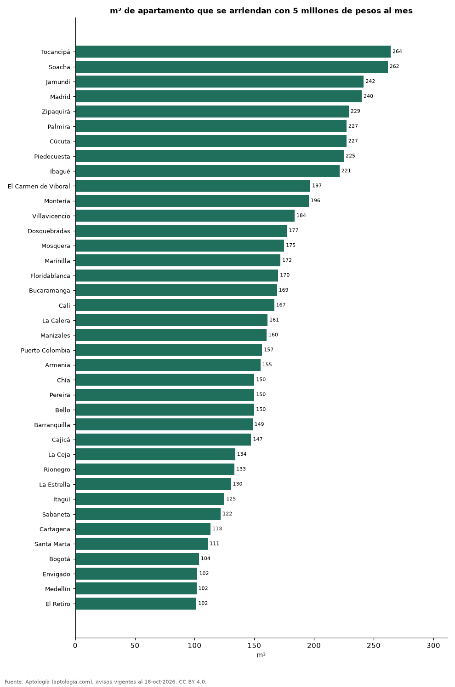

¿Cuántos metros cuadrados se arriendan con 5 millones de pesos al mes? 38 ciudades de Colombia (octubre 2026)
Estudio con datos abiertos (CC BY 4.0). Versión original: https://github.com/elbroker/aptologia-datos/tree/main/estudios/cuantos-metros-cuadrados-arrienda-5-millones-ciudades-colombia-2026 · DOI: 10.5281/zenodo.23512828
Con 5 millones de pesos al mes se arriendan unos 264 m² de apartamento en Tocancipá, la ciudad que más rinde de 38, y 102 m² en El Retiro. En Bogotá alcanzan para 104 m² y en Medellín para 102 m².
Resumen: usamos el precio mediano por m² de 64.524 apartamentos en arriendo con área declarada en 38 ciudades.
Actualizado: 18 de octubre de 2026 (datos del 18 de octubre de 2026) · Próxima actualización: mensual.

Resumen
| Indicador | Valor |
|---|---|
| Más m² | Tocancipá: 264 m² |
| Menos m² | El Retiro: 102 m² |
| Bogotá | 104 m² |
| Medellín | 102 m² |
Metros cuadrados por 5 millones de pesos al mes
| Ciudad | m² con 5 millones de pesos al mes | Precio por m² (mediana) | Avisos con área |
|---|---|---|---|
| Tocancipá | 264 | 18.924 pesos | 94 |
| Soacha | 262 | 19.098 pesos | 128 |
| Jamundí | 242 | 20.690 pesos | 107 |
| Madrid | 240 | 20.833 pesos | 259 |
| Zipaquirá | 229 | 21.818 pesos | 168 |
| Palmira | 227 | 22.000 pesos | 42 |
| Cúcuta | 227 | 22.007 pesos | 298 |
| Piedecuesta | 225 | 22.222 pesos | 57 |
| Ibagué | 221 | 22.581 pesos | 249 |
| El Carmen de Viboral | 197 | 25.391 pesos | 102 |
| Montería | 196 | 25.556 pesos | 44 |
| Villavicencio | 184 | 27.212 pesos | 74 |
| Dosquebradas | 177 | 28.193 pesos | 70 |
| Mosquera | 175 | 28.571 pesos | 167 |
| Marinilla | 172 | 29.091 pesos | 107 |
| Floridablanca | 170 | 29.412 pesos | 357 |
| Bucaramanga | 169 | 29.588 pesos | 416 |
| Cali | 167 | 30.000 pesos | 1.499 |
| La Calera | 161 | 31.034 pesos | 51 |
| Manizales | 160 | 31.199 pesos | 282 |
| Puerto Colombia | 157 | 31.944 pesos | 90 |
| Armenia | 155 | 32.222 pesos | 337 |
| Chía | 150 | 33.333 pesos | 489 |
| Pereira | 150 | 33.333 pesos | 1.530 |
| Bello | 150 | 33.333 pesos | 1.082 |
| Barranquilla | 149 | 33.654 pesos | 3.694 |
| Cajicá | 147 | 33.929 pesos | 385 |
| La Ceja | 134 | 37.323 pesos | 354 |
| Rionegro | 133 | 37.500 pesos | 3.179 |
| La Estrella | 130 | 38.333 pesos | 489 |
| Itagüí | 125 | 40.000 pesos | 908 |
| Sabaneta | 122 | 41.026 pesos | 3.868 |
| Cartagena | 113 | 44.118 pesos | 2.008 |
| Santa Marta | 111 | 45.000 pesos | 674 |
| Bogotá | 104 | 48.246 pesos | 12.954 |
| Envigado | 102 | 48.864 pesos | 7.303 |
| Medellín | 102 | 49.206 pesos | 20.068 |
| El Retiro | 102 | 49.254 pesos | 541 |
5 millones de pesos al mes ÷ precio mediano por m²; es un tamaño de referencia, no un aviso concreto.
Preguntas frecuentes
¿Cuántos metros cuadrados arriendo con 5 millones de pesos al mes en Bogotá? Unos 104 m² al precio mediano por m² de octubre de 2026.
¿Dónde rinde más un presupuesto de 5 millones de pesos al mes? En Tocancipá: unos 264 m².
Metodología
- Fuente: exportes nocturnos de la base de datos de Aptología (aptologia.com) del 18 de octubre de 2026: avisos vigentes de vivienda en portales inmobiliarios de 13 países, recogidos por Aptología y vistos en línea entre el 11 y el 18 de octubre de 2026. Corte: 18 de octubre de 2026.
- Depuración: se eliminan duplicados exactos (misma ciudad, zona, tipo, precio, moneda, área, habitaciones y baños) y los precios fuera del percentil 1–99 de cada país, operación, moneda y tipo; el precio por m² usa solo avisos con área declarada entre 12 y 2.000 m² y también se recorta al P1–P99.
- Qué se mide: precios pedidos (publicados), no precios de cierre. En arriendo, el canon mensual sin administración, gastos comunes ni condominio.
- Muestra mínima: cada cifra publicada se apoya en al menos 30 avisos; las celdas con menos se omiten.
- Colombia: Precios en pesos colombianos, sin conversión de moneda.
- Limitaciones: la cobertura depende de los portales que recorre Aptología en cada país y es mayor en las ciudades grandes y en los segmentos medio-alto y alto; el área es la que declara el aviso, sin verificar; los nombres de zona vienen de los portales.
- Privacidad: solo se publican agregados; no se publica ningún dato personal, enlace a avisos ni nombre de anunciante.
- Datos abiertos: datos.csv, licencia CC BY 4.0.
Cómo citar
Pinzón Pineda, D. M. (2026). ¿Cuántos metros cuadrados se arriendan con 5 millones de pesos al mes? 38 ciudades de Colombia (octubre 2026). Aptología (aptologia.com). https://github.com/elbroker/aptologia-datos/tree/main/estudios/cuantos-metros-cuadrados-arrienda-5-millones-ciudades-colombia-2026. Datos: datos.csv, licencia CC BY 4.0.